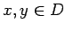
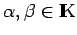
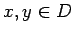
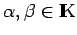
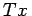
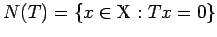
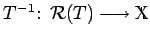
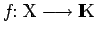
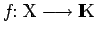

Inhalt Index DeskTop Bronstein

 Funktionalanalysis Vektorräume Lineare Operatoren und Funktionale
Funktionalanalysis Vektorräume Lineare Operatoren und Funktionale


Seien  und
und  zwei Vektorräume über ein und demselben Körper
zwei Vektorräume über ein und demselben Körper  und D eine lineare Teilmenge aus
und D eine lineare Teilmenge aus  . Eine Abbildung
. Eine Abbildung  heißt linear, lineare Transformation, linearer Operator oder Homomorphismus, wenn für beliebige  und  stets gilt:
heißt linear, lineare Transformation, linearer Operator oder Homomorphismus, wenn für beliebige  und  stets gilt:
Für einen linearen Operator T bevorzugt man in Anlehnung an lineare Funktionen die Bezeichnung , während für allgemeine Operatoren T(x) steht.  ist der Nullraum oder Kern des Operators T und wird mit Ker(T) bezeichnet. Als Endomorphismus von  bezeichnet man eine lineare Abbildung des Vektorraumes
bezeichnet man eine lineare Abbildung des Vektorraumes  in sich. Ist T eine injektive lineare Abbildung, so ist die aus
in sich. Ist T eine injektive lineare Abbildung, so ist die aus  durch
durch
definierte Abbildung  linear und heißt Inverse oder Umkehrabbildung von  . Ist
. Ist  der Vektorraum
der Vektorraum  , so nennt man eine lineare Abbildung  ein lineares Funktional oder eine Linearform.
, so nennt man eine lineare Abbildung  ein lineares Funktional oder eine Linearform.